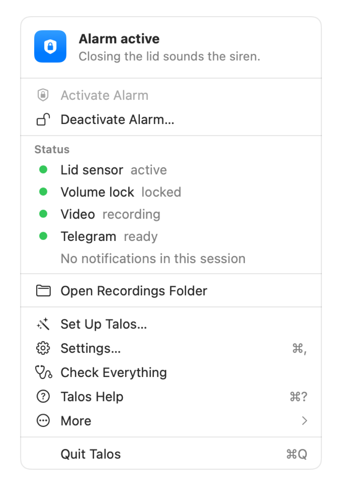

macOS 14 or later · Apple silicon and Intel · free for personal use

What it does
Watches the lid. Turn the alarm on and Talos keeps your Mac awake. Closing the lid sets off a loud siren, even with the volume turned down.
Tells you. It records video, shows an alert on screen and sends a message to your own Telegram bot. Photos and the Mac’s live location are optional and off by default.
Hard to switch off. Stopping the alarm always needs Touch ID or your Mac password, and quitting the app does not stop it.
First open (important)
Talos is free and is not notarized by Apple, which costs a yearly fee. So macOS shows a warning the first time. This is expected. Open Talos only if you downloaded it from this page.
Open the .dmg and drag Talos onto Applications. Eject the disk image.
macOS 14: in Applications, right-click Talos, choose Open, then Open again.
macOS 15 or later: open Talos and click Done. Then go to System Settings > Privacy & Security, scroll to Security, click Open Anyway and confirm with your password or Touch ID.
You only do this once. Optional: check the download with the SHA256SUMS file of the release:
cd ~/Downloads
shasum -a 256 -c SHA256SUMS --ignore-missing
Set up your Telegram bot in 5 steps
Talos messages your own private bot, so nobody else sees anything. The setup assistant in the app guides you through this.
In Telegram, open @BotFather and send /newbot.
Choose a name, then a username ending in bot.
Copy the token BotFather gives you and paste it into Talos. Keep it private. Click Verify.
Click Open Your Bot, press Start in Telegram, then in Talos click Find My Chat and confirm it is you.
Click Send Test Message. It must arrive on your phone. Then run the first test in daylight at low volume.
Privacy in short
No analytics, no ads. The first time you open Talos you create a profile: only your profile name goes, once, to a small registration service run by the author, to know who and how many use Talos. No identifier of your Mac, no version, and the author cannot block or switch off your copy. Ask the author to delete your name.
Update check: About once a day, and when you choose Check for Updates…, Talos requests the latest version from its update host. You can disable automatic checks in More. The host sees your IP address and may receive app and macOS versions in technical headers; system profiling is disabled. No profile name, persistent device identifier or alert content is sent. Talos never downloads or installs updates without your approval.
Settings, logs and videos stay on your Mac. The bot token is kept in the macOS Keychain.
Messages, and photos or location if you turn them on, go only to your Telegram bot (Telegram’s own terms apply).
Video and photos can show people. Use Talos only on your own Mac and where the law allows it.
Support
Talos is free. If it is useful to you and you wish, you can support its development with a voluntary donation: paypal.me/marcofrova. It is never required and gives no extra features or guarantees.
Why “Talos”?
In Greek myth, Talos was a giant of bronze made to guard the island of Crete. Three times a day he circled its shores, watching for intruders. This app does the same job for your Mac.